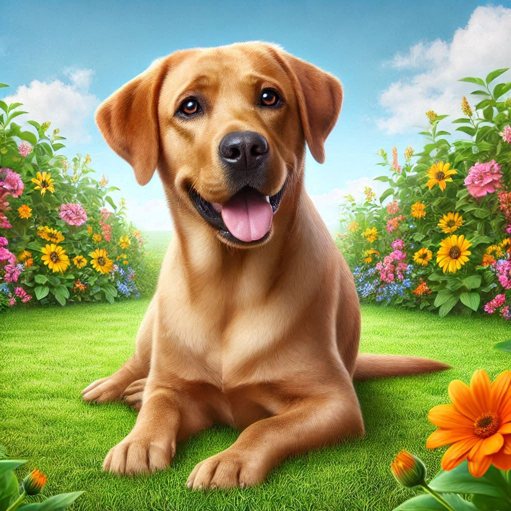
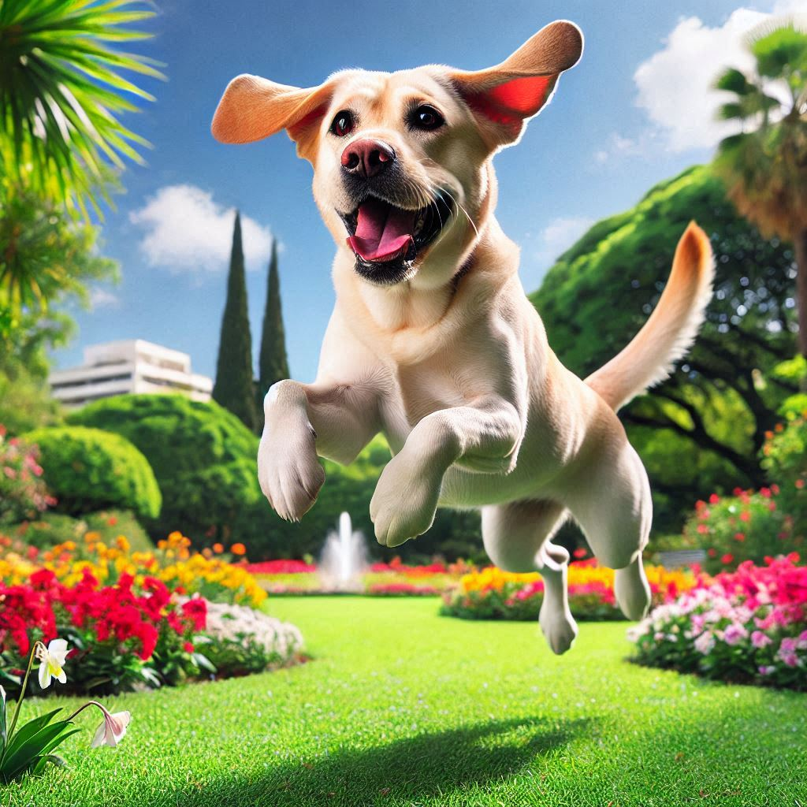
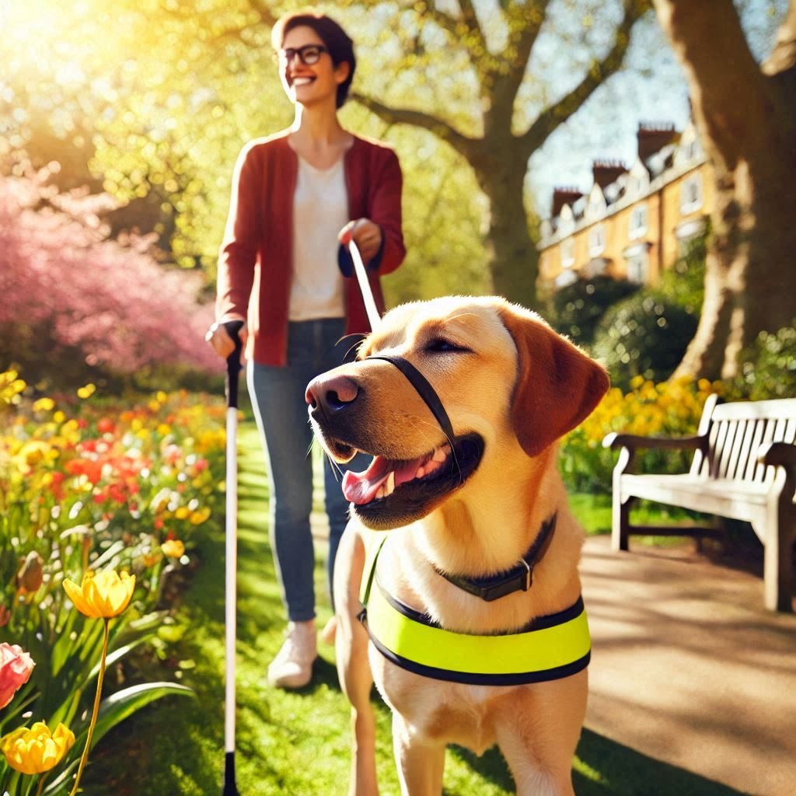
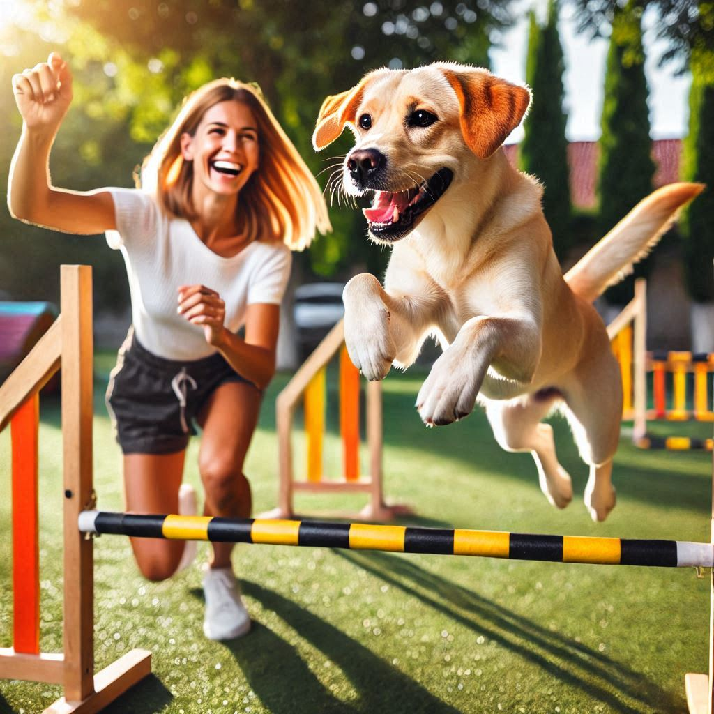

Galeria





O Labrador Retriever é originário da Terra Nova, no Canadá, e foi desenvolvido no Reino Unido. Eles foram inicialmente usados por pescadores para ajudar a puxar redes e pegar peixes que escapavam.
Os Labradores são conhecidos por seu pelo curto e denso, que pode ser preto, chocolate ou amarelo. Eles são cães de porte médio a grande, com uma constituição robusta e atlética.
Os Labradores são famosos por sua natureza amigável e extrovertida. Eles são inteligentes, fáceis de treinar e se dão bem com crianças e outros animais. São cães leais e afetuosos, ideais para famílias.
Os Labradores precisam de cuidados regulares com o pelo, incluindo escovação semanal para remover pelos soltos e manter o pelo saudável.
Uma dieta balanceada é essencial. Consulte um veterinário para determinar a quantidade e o tipo de alimento adequado para o seu Labrador.
Labradores são cães ativos que precisam de exercícios diários. Caminhadas, corridas e brincadeiras são ótimas maneiras de mantê-los saudáveis.
O treinamento deve começar cedo. Labradores são inteligentes e respondem bem a comandos, mas a consistência é fundamental.
"Meu Labrador, Max, salvou minha vida. Durante uma caminhada, ele percebeu que algo estava errado e me trouxe de volta para casa. Ele é meu herói."
"Desde que adotei Luna, minha vida mudou completamente. Ela é sempre alegre e me faz sorrir, mesmo nos dias mais difíceis. Ela é minha melhor amiga."
"Meu Labrador, Bruno, é incrivelmente inteligente. Ele aprendeu truques incríveis e sempre faz a alegria dos visitantes. Ele é um verdadeiro showman!"
"Adotei Toby quando ele era apenas um filhote. Agora ele é meu companheiro de aventuras. Nós exploramos trilhas e praias juntos. Ele é meu parceiro perfeito."
"Minha Labrador, Bella, é a melhor terapeuta. Ela tem um temperamento tão calmo e amoroso que todos se sentem melhor ao seu lado. Ela é uma verdadeira anjo."